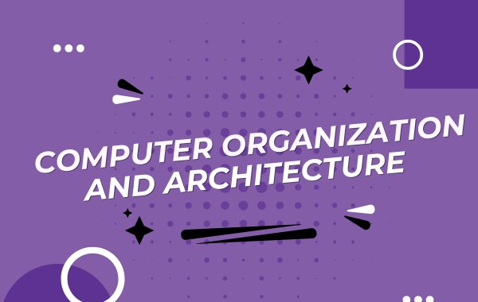

Course Description
This course introduces computer architecture fundamentals, instruction execution models, memory organization, pipelining, and multiprocessor concepts.
Instructor Details
Course Instructor: Rajesh Kumar
Educational Qualifications: PhD from IIT Madras, M.Tech from IIT Kanpur. Journals Published: 14 international, 9 national.
Course Curriculum
- Course Objectives
- Understand computer organization and architecture basics.
- Analyze data representation and processor operation.
- Course Outcomes
- Explain instruction sets and memory hierarchy.
- Evaluate pipeline and multiprocessor performance issues.
- UNIT-I: Introduction to Computer Architecture
- Functional units, performance metrics, instruction cycle.
- UNIT-II: Instruction Set Architecture
- Instruction formats, addressing modes, RISC vs CISC.
- UNIT-III: Data Representation
- Number systems, floating-point, arithmetic operations.
- UNIT-IV: Memory Systems and Pipelining
- Cache memory, pipeline stages, and hazards.
- UNIT-V: Multiprocessors
- Parallel models, interconnection networks, evaluation.